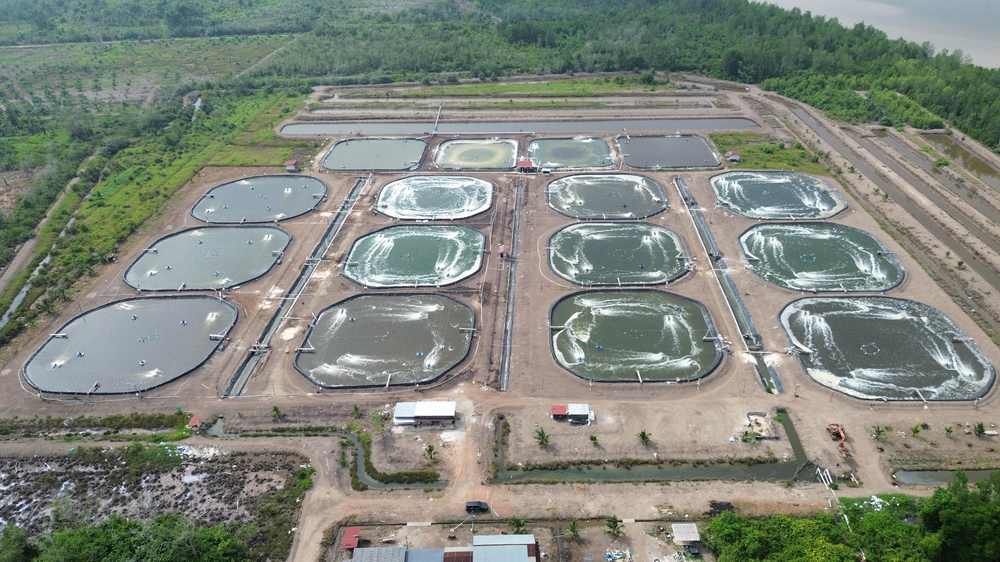

Tentang usaha
Awal mula
Sekitar 2016, pemilik melihat peluang yang baik di budidaya udang vaname. Budidaya udang sebenarnya sudah lama berjalan, tetapi masih dilakukan secara konvensional di kolam tanah. Cara itu perlu pembaruan teknologi.
Tantangan terbesarnya adalah kualitas air. Budidaya udang sangat dipengaruhi air laut atau air payau, dan kolam tanah mudah tercemar sehingga parameter air turun. Karena itu usaha ini menggabungkan teknologi budidaya dengan pengolahan air (wastewater treatment).
Sejak itu kolam diisolasi dengan terpal HDPE, aerasi ditingkatkan, probiotik dipakai, dan air diolah lewat filter serta sterilisasi ultraviolet. Rinciannya ada di halaman Teknologi.
Profil usaha
- Nama usaha
- CV Vaname Bahari Nusantara
- Pemilik
- Franki
- Komoditas
- Udang vaname (Litopenaeus vannamei)
- Mulai beroperasi
- Sekitar 2016
- Lokasi
- Bengkalis
- Luas areal
- 20 Hektar (Ha)
- Kolam produksi
- 12 kolam × 1.900 m³ (total 22.800 m³)
- Water treatment
- 8 kolam × 5.000 m³ (total 40.000 m³)
- Treat pond
- 4 kolam × 1.800 m³ (total 7.200 m³ air)
- Pengolahan limbah (IPAL)
- Instalasi pengolahan air limbah kisaran 20% dari areal 20 ha yang digunakan untuk proses budidaya dan treatment air
- Sistem
- Kolam terpal HDPE, di ruang terbuka (outdoor)
Teknologi saja belum cukup
Budidaya ini harus mengikuti teknologi yang ada. Tidak bisa memakai cara-cara lama.
Menurut pemilik, keberhasilan budidaya tidak hanya ditentukan oleh sarana. Sumber daya manusia, standar operasional prosedur (SOP), dan ketepatan pengelolaan sama pentingnya.
Hasil juga bisa berbeda dari satu siklus ke siklus berikutnya karena budidaya dilakukan di ruang terbuka. Benur dari supplier ikut menentukan, terutama genetiknya.
Foto udara kawasan tambak
Areal budidaya dan pengolahan air seluas 20 ha yang terdiri dari kolam produksi terpal HDPE, water treatment, treat pond, dan IPAL.
